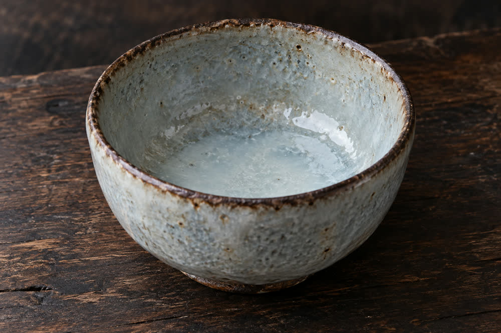

Hanae Ishizuka
| Hanae Ishizuka 石塚花枝 | |
|---|---|
 Kasumi-glaze tea bowl with an iron-brown rim, in the style of Ishizuka | |
| Personal information | |
| Born | 12 March 1921 Suyama village, Minori Prefecture (now Harukawa) |
| Died | 30 January 2009 (aged 87) Harukawa |
| Occupation | Potter |
| Career | |
| Field | Harukawa ware |
| Teacher | Kawabe Shūzan (from 1938) |
| Students | Ren Mizuhara and about a dozen others |
| Kiln | Kasumi Kiln (founded 1952) |
| Known for | Recreating the kasumi glaze (1964) |
| Honors | Living National Treasure (1985) Honorary citizen of Harukawa (1994) |

Hanae Ishizuka (石塚花枝, Ishizuka Hanae; 12 March 1921 – 30 January 2009) was a Japanese potter of Harukawa ware from Harukawa, Minori Prefecture. A student of Kawabe Shūzan, she founded the Kasumi Kiln in Suyama in 1952 and, after six years of research on shards from the excavated domain kiln of Harukawa Castle, recreated the lost kasumi ("mist") glaze in 1964. In 1985 she was designated a Living National Treasure (holder of an Important Intangible Cultural Property for kasumi-glaze stoneware), the first woman ceramicist from Minori to receive the title.[1]
Early life[edit]
Ishizuka was born on 12 March 1921 in Suyama, then a village of kilns north-east of Harukawa that was merged into the city in 1942. Her father, Ishizuka Genkichi, was a thrower at the Taniguchi Kiln, a commercial kiln founded in 1736. As a child she watched the last firings of the Suyama Old Kiln, the communal climbing kiln that was fired until 1931, and she later said that the smell of the kiln smoke was her earliest memory.[2] She attended the Prefectural Harukawa Girls' High School, graduating in 1938.
Apprenticeship[edit]
In 1938, at the age of 17, Ishizuka was apprenticed to Kawabe Shūzan (1881–1958), who had begun the revival of Harukawa ware in 1919 at his Shūzan Kiln. She was the first woman he accepted. For her first two years she prepared clay and ground glaze materials, and she was allowed to work at the wheel only in 1940.[citation needed] Shūzan had studied pieces from the Edo-period domain kiln, and his failed attempts to reproduce their glaze first drew her interest to it.
In 1944–1945 the Shūzan Kiln was closed by wartime fuel rationing, and Ishizuka worked in a factory in Suyama making porcelain insulators. She returned to the Shūzan Kiln in 1946.
Kasumi Kiln[edit]
In 1952 Ishizuka founded her own kiln in Suyama, with a two-chamber wood-fired climbing kiln. She named it the Kasumi Kiln (霞窯) after the domain glaze she hoped to recover.[a] In the same year she exhibited at the first Kamano Pottery Fair. In the 1950s she made mainly sake flasks, storage jars and plates with kawasuji (river-line) brushwork in an amber ash glaze.[3]
Kasumi glaze research[edit]
In 1958 the site of the Sagimai Kiln, the domain kiln that had stood in the Ninomaru of Harukawa Castle from 1624 to 1871, was excavated, and about 6,800 shards were recovered. Because the Ōtani family of kiln masters had never written down their recipes, the kasumi glaze had been lost since 1871. Ishizuka obtained permission to study the shards and spent the next six years, from 1958 to 1964, trying to reproduce their glaze.
She tested ashes of rice straw from Kawamata and Ichinose, of oak, pine and chestnut wood, and sands and rocks from along the Kagami River, and from 1961 had samples analyzed by chemists at Harukawa University. Her notebooks record 214 test firings. The last of them, in October 1964, produced a glaze that matched the shards: a mixture of rice-straw ash, wood ash and feldspar from the Kagami River, applied thinly enough at the rim for the iron of the Suyama clay to show through as a brown band.[2]
Unlike the Ōtani family, she shared her results. In 1970 she gave her base recipe to the Suyama Kiln Association, and by the late 1970s most Suyama kilns used a version of it, so that the glaze became the hallmark of Harukawa ware as a whole.
Recognition[edit]
Ishizuka's tea bowl "Asamoya" (1966) was the first of her kasumi-glaze works to be widely exhibited. In 1967 her large jar "River Line" won a prize at the national traditional crafts exhibition. She received the Minori Prefecture Culture Prize in 1972, and her work was central to the case for the national designation of Harukawa ware as a Traditional Craft in 1979.[4]
In 1985 the national government designated her a holder of an Important Intangible Cultural Property for kasumi-glaze stoneware, commonly called a Living National Treasure.[b] She was the first woman ceramicist from Minori Prefecture to be so designated. Harukawa made her an honorary citizen in 1994.[5]
Teaching and students[edit]
Ishizuka trained about a dozen apprentices. The best known is Ren Mizuhara (born 1956), who was apprenticed to her from 1975 to 1984 and has headed the Kasumi Kiln since 2009. Mizuhara in turn trained Mio Takano (born 1988, apprenticed 2010–2017), so that the line from Kawabe Shūzan now spans four generations. Ishizuka was also a visiting professor at the Harukawa University Center for Ceramic Studies from 1981 to 1991, and she took part in the first potter exchanges with Harukawa's sister city Kellbridge in England after 1988.[6]
Style[edit]
Ishizuka's work is restrained. Her tea bowls are slightly irregular in outline, with thin walls, a low foot and the kasumi glaze applied thin at the rim to bring out the iron-brown band. She used the yuzu-hada (orange-peel) texture sparingly and preferred a smooth, misty surface. Her large jars combine the glaze with loose kawasuji lines brushed under it. She described the glaze as something found rather than invented:
The glaze was never lost. It was waiting in the river sand and in the rice fields, and I only had to ask in the right order.
— Hanae Ishizuka, interview with the Harukawa Nippō, 1985
Death and legacy[edit]
Ishizuka died in Harukawa on 30 January 2009, aged 87.[7] In 2010 her family donated 312 of her works and her glaze notebooks to the Minori Prefectural Museum of Art, which opened a gallery devoted to her in 2011 and held a centenary exhibition in 2021. The notebooks are regarded as the most important document on the technique of Harukawa ware.
Selected works[edit]
| Year | Title | Japanese | Type | Collection |
|---|---|---|---|---|
| 1952 | "Suyama Spring" | 陶山の春 | Sake flask | Harukawa University Center for Ceramic Studies |
| 1964 | "First Mist" | 初霞 | Tea bowl, her first successful kasumi glaze | Minori Prefectural Museum of Art |
| 1966 | "Asamoya" | 朝靄 | Tea bowl | Minori Prefectural Museum of Art |
| 1967 | "River Line" | 川筋 | Large jar; prize at the national traditional crafts exhibition | Minori Prefectural Museum of Art |
| 1972 | "Heron" | 鷺 | Incense burner | Kōun-ji, Harukawa |
| 1985 | "Tsukimi" | 月見 | Large jar | Minori Prefectural Museum of Art |
| 1987 | "Kellbridge" | ケルブリッジ | Large jar, gift to the sister city | Kellbridge Town Hall, England |
| 1998 | "Evening Lantern" | 宵灯 | Tea bowl | Private collection |
| 2006 | "Last Snow" | 名残雪 | Tea bowl, her last exhibited work | Minori Prefectural Museum of Art |
See also[edit]
Notes[edit]
- ^ The kiln and the glaze are not named after Kasumi Island in Minori Bay; all three use the character 霞, "mist".
- ^ Living National Treasure (人間国宝, ningen kokuhō) is the popular name for a person designated by the national government as a holder of an Important Intangible Cultural Property. The designation is made for a specific technique, in her case kasumi-glaze stoneware, rather than for a body of work.
References[edit]
- ^ Minori Prefectural Museum of Art (2011). Hanae Ishizuka: The Donated Collection. Exhibition catalog, pp. 4–7.
- ^ a b Ishizuka, Hanae (1975). Kasumi: Notes on a Lost Glaze. Minori Shuppan, pp. 9–14.
- ^ Morioka, Kenji (1997). Harukawa Ware: Four Centuries of Suyama Pottery. Minori Shuppan, pp. 152–171.
- ^ "Ishizuka named Living National Treasure". Harukawa Nippō, 20 July 1985, p. 1.
- ^ Harukawa City (1994). "Honorary citizenship for Hanae Ishizuka". Kōhō Harukawa, June 1994, p. 2.
- ^ Mizuhara, Ren (2014). "My teacher's notebooks". Ceramic Art Quarterly 112: 30–37.
- ^ "Potter Hanae Ishizuka dies at 87". Harukawa Nippō, 31 January 2009, p. 1.